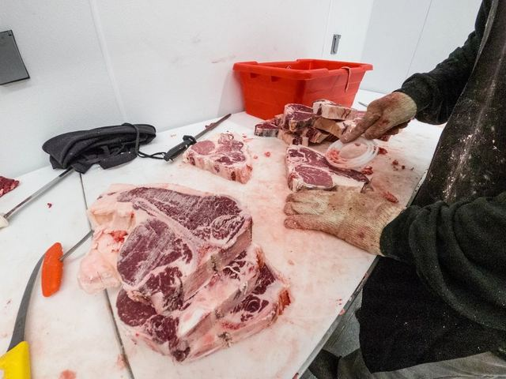
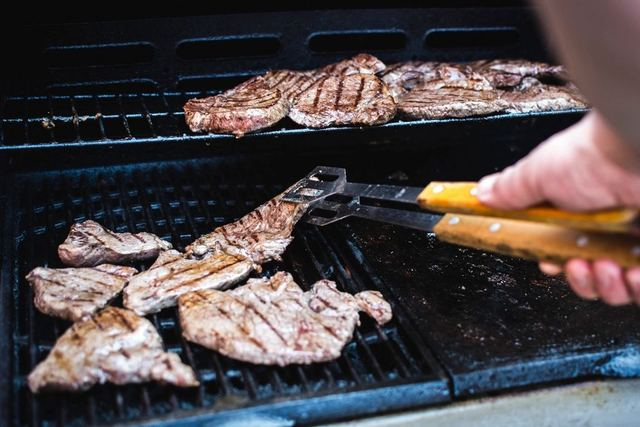

Her gün 08:00–19:30
Öz Alipaşa
Et Pazarı
Silivri Alipaşa'da kasap reyonu ile et sofrası yan yana. Şemada bir parçaya dokunun; adını, dokusunu ve hangi yemeğe yakıştığını görün, beğendiğinizi sipariş listenize atın.
Google'da 4,4 puan, 816 yorumŞemadan bir parça seçin
On bir bölgenin her biri ayrı bir yemeğe yakışır: sırttan ızgaralık, buttan rostoluk, döşten köftelik, incikten haşlamalık çıkar. Tam döküm için kasap reyonu sayfasına bakın.
Kasap reyonu
Tezgâhın bu yanında et çiğdir: parçayı siz seçersiniz, kesimi ve gramajı siz söylersiniz.
- Dana ve kuzuİstediğiniz parça, istediğiniz kesim ve gramajda.
- KıymaHangi parçadan, ne kadar yağlı, kaç çekim: siz söyleyin.
- Mangal ürünleriPirzola, antrikot, köfte, kanat.
- Beyaz et ve şarküteriTavuk, hindi; sucuk, pastırma, kavurma.

Sofra
Tezgâhın öbür yanında et ateşle buluşur. Izgaradan çıkanı yerinde yemek isteyenler için.
- IzgaradanKöfte, kuzu pirzola, şiş çeşitleri, antrikot.
- YanınaMevsim salata, közlenmiş biber ve domates, ayran.
- Günün çıkanıHer gün değişebilir; gelmeden bir sorun.

Tezgâha gelmeden siparişiniz hazır olsun
Sırada beklerken ne alacağınızı düşünmek yerine listeyi evden gönderin.
Parçayı seçin
Kesim şemasından ya da sipariş sayfasındaki reyon listesinden istediğiniz ürünü ekleyin.
Gramajı ve kesimi yazın
Yarım kilo mu, bir buçuk mu? Kuşbaşı mı, üç santim dilim mi, çift çekim kıyma mı?
WhatsApp'tan gönderin
Liste düzgün bir mesaja dönüşür. Uygunluk ve tutar bilgisini aynı yazışmada sorarsınız.
Tezgâhta ne demeli?
Kasaptan iyi et almanın yarısı doğru parçayı bilmek, öbür yarısı ne istediğini anlatabilmektir. Dört cümle işinizi görür.
- Önce yemeği söyleyin“Antrikot” demeden önce “akşama ızgara yapacağım” deyin. Parçayı yemeğe göre seçmek kasabın işidir.
- Kaç kişi olduğunuzu söyleyinGramajı tahmin etmek yerine sofradaki kişi sayısını verin; kemikli ve kemiksiz ette hesap değişir.
- Kalınlığı santimle verin“Kalın olsun” herkese göre başkadır. Izgaralık biftekte iki buçuk, üç santim iyi bir başlangıçtır.
- Kıymada üç şey sorulurHangi parçadan, ne kadar yağlı, kaç çekim. Köfte ile mantının kıyması aynı değildir.
 Temsili görsel
Temsili görsel
Mangal mı yakacaksınız?
Kaç kişiye ne kadar et gerektiğini hesaplayın, çıkan miktarı tek dokunuşla listenize ekleyin.
Kaç kişilik, hesaplayınSık sorulanlar
Sipariş bırakabilir miyim?
Evet. WhatsApp'tan ürünü, gramajı ve nasıl hazırlanmasını istediğinizi yazın. Sipariş listesi bu mesajı sizin yerinize düzenler.
Eve servis var mı?
Bulunduğunuz yere göre değişir. Adresinizi yazıp sorun; mümkünse size bildirilir.
Fiyatları nereden öğrenirim?
Et fiyatı sık değişir, bu yüzden sitede fiyat yazmıyoruz. Güncel fiyat için arayın ya da listenizi gönderip tutarını sorun.
Kıymayı istediğim gibi çektirebilir miyim?
Hangi parçadan, ne kadar yağlı ve kaç çekim istediğinizi belirtin. Kararsızsanız ne pişireceğinizi söylemeniz yeter.
Sofra için önceden haber vermek gerekir mi?
Kalabalık gelecekseniz gelmeden arayıp yer durumunu ve günün yemeklerini sormanız iyi olur.
Paketiniz sicimle bağlanmadan önce
Aklınızdaki yemeği, kişi sayısını ya da doğrudan listenizi yazın. Telefon da olur.